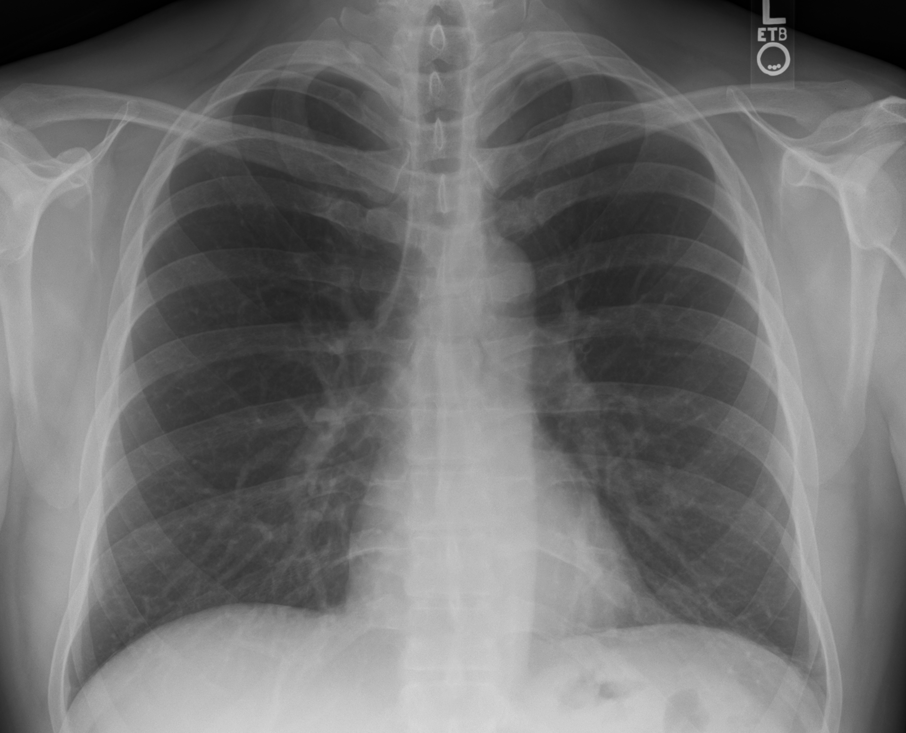

34 cortes axiais. Arraste o controle, role o mouse ou arraste para cima e para baixo sobre a imagem. A janela remapeia o brilho dos pixels.
Ligue os pinos para ver as estruturas ou use o modo “Encontre a estrutura” e clique onde ela está.
